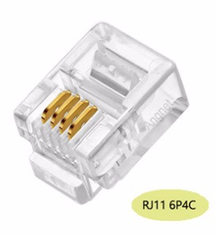

Vragen en Antwoorden
- Niet alles DSMR 4 is DSMR 4
- 5 Volt Programmer
- Tactile Switches
- PUYA Chip
- Update of Upgrade
- Slave kanaal Gasmeter
- Help! wat is pin 1 van mijn 4N35?
- De rode Led knippert
- Wat zijn de maten van de DSMR-logger?
- Wat is het verschil tussen RJ10 en RJ12?
Niet alles DSMR 4 is DSMR 4 ..
Mijn DSMR-logger doet het niet als ik hem op de Slimme Meter aansluit
Er zijn Slimme Meters die 'zeggen' DSMR Versie 4 te volgen maar toch geen 5 volt met voldoende stroom leveren.Bouwers van de DSMR-logger hebben problemen gemeld met de KAIFA MA105A en MA105C en met de KAIFA MA304.
Kijk bijvoorbeeld hier en hier.
Dit probleem is op te lossen door de DSMR-logger op een externe (bijvoorbeeld USB) voeding aan te sluiten.
5 Volt Programmer
Kan ik met een 5 volt USB to TTL adaptor de DSMR-logger flashen?
Als het een type is dat de TX en RX signalen op 3v3 levert (bijvoorbeeld deze) dan kán het wel, maar moet je de 5 Volt output op de 5 Volt pin van de DSMR-logger aansluiten. Je moet hem dan zoals in het plaatje hieronder aansluiten.
Tactile Switches
Waarom heb ik een tacktile switch met een lange en één met een korte stift?
De tacktile switch met de korte stift is de RESET switch. Eenmaal ingebouwd in een (project) box moet de FLASH switch bereikbaar blijven omdat hij een dubbel functie heeft. Hij dient bij normaal gebruik om het oled-scherm 'wakker' te maken. Vandaar de lange stift!Deze lange stift maakt de switch wel erg kwetsbaar zolang de DSMR-logger niet in een (project) box is ingebouwd. Als je er een niet recht-naar-beneden kracht op uitoefend, dan breekt hij makkelijk af!
PUYA Chip
Mijn versie 3 bordje met PUYA chip doet het niet
Het heeft er alle schijn van dat de DSMRloggerWS firmware niet geschikt is voor een ESP-01 (versie 3 bordje) met een PUYA flash chip.Kijk ook hier.
Update of Upgrade?
Wanneer moet ik updaten en wanneer upgraden?
We doen eenupdate als we de firmware willen vervangen met
een nieuwere versie van dezelfde firmware (dus we vervangen DSMRlogger2HTTP door
een nieuwere versie van DSMRlogger2HTTP óf we vervangen de DSMRloggerWS
firmware door een nieuwere versie van de DSMRloggerWS firmware)
We doen een upgrade als we de ene firmware vervangen door een andere (dus
we vervangen bijvoorbeeld DSMRlogger2HTTP door DSMRloggerWS).
Update
Bij een update zal de lay-out van de data-bestanden niet veranderen en kun
je volstaan met het opnieuw flashen van de firmware.
Voor de data-map (SPIFFS) kun je twee wegen bewandelen.
1)
Je haalt m.b.v. de FSexplorer (of met DSMRlogger2HTTP http://DSMR-ESP01.local/onderhoud)
de .html en .js bestanden op uit de data-map en zet deze in SPIFFS
2)
Je haalt met de FSexplorer de PRDxxxx.csv bestanden op en zet deze in de data-map,
waarna je met het Data Upload Tool de data-map naar SPIFFS kunt overzetten.
Upgrade
Bij een upgrade moet je zowel de firmware als de data-map opnieuw naar de
DSMR-logger flashen.
Uiteraard kun je ook in dit geval éérst de PRDxxxx.csv bestanden uit de
DSMR-logger halen en ergens op je computer bewaren. Met wat moeite kun je
de inhoud van deze bestanden omzetten in het nieuwe formaat en ze dan weer
terug zetten in de DSMR-logger.
Slave kanaal Gasmeter
Ik zie mijn gas-verbruik niet op de DSMR-logger
Eric heeft dit voor ons uitgezocht en als commentaar gepost.Hieronder vind je de inhoud van zijn post.
Het kan voorkomen dat de gasmeter niet op slave kanaal 1, maar op 2, 3 of 4 is aangesloten. Dit is op zich geen probleem, alleen gaat de
dsmr-library er vanuit
dat de gasmeter op kanaal 1 is aangesloten…
Lang verhaal kort, als je de arduino-dsmr library iets aanpast (MBUS instelling) en daarna de DSMRloggerWS firmware opnieuw compileerd en naar de DSMR-logger V4 of de ESP-01 flashed, dan werk het geheel als een trein 🙂
Ik heb het volgende gedaan:
- Login via Telnet op de DSMR-logger Versie 4
- Laat een telegram verschijnen op je scherm (zie menu voor de juiste optie)
- Ga op zoek naar de gasmeting.
Een voorbeeld:
0-2:24.1.0(003)
0-2:96.1.0(47303033**************31333137)
0-2:24.2.1(181202194007W)(00283.687*m3)
In een gangbare situatie staat hier normaal:
0-1:24.1.0(003)
0-1:96.1.0(47303033**************31333137)
0-1:24.2.1(181202194007W)(00283.687*m3)
De 0-2 waarde geeft aan dat je gasmeter is aangesloten op kanaal twee van de slimme meter. Het kan echter ook dat de gasmeter op kanaal 0-3 of 0-4 is aangesloten.
Ga naar de arduino-dsmr library op je computer, deze is te vinden in de Arduino sketch
directory er vervolgens in de libraries subdirectory. Je bent op zoek naar het bestand
fields.h. Ergens rond regel 174 kom je de volgende constanten tegen:
const uint8_t GAS_MBUS_ID = 1;
const uint8_t WATER_MBUS_ID = 2;
const uint8_t THERMAL_MBUS_ID = 3;
const uint8_t SLAVE_MBUS_ID = 4;
De truc is om het ID achter GAS_MBUS_ID aan te passen naar het kanaal waar je gasmeter op staat.
Vervolgens pas je, bijvoorbeeld, de watermeter (WATER_MBUS_ID) aan naar het andere ID.
Resultaat bij mij:
const uint8_t GAS_MBUS_ID = 2;
const uint8_t WATER_MBUS_ID = 1;
const uint8_t THERMAL_MBUS_ID = 3;
const uint8_t SLAVE_MBUS_ID = 4;
Nu nog even de boel opslaan en over the air de firmware update (pure luxe dat dit kan). Vanaf nu
kun je genieten van gasmetingen.
Althans… Dat was bij mij het geval.
Help! Wat is pin 1 van mijn 4N35?
Hoe identificeer ik pin-1 van de optocoupler?
Er zijn verschillende varianten van de 4N35 opto-coupler. Hieronder drie afbeeldingen
waarmee je kunt identificeren wat pin 1 van de 4N35 is:


De rode Led knippert
Mijn rode (voedings) Led (D1) knippert en brand niet constant!
Dit duidt er meestal op dat de voeding uit de Slimme Meter niet toerijkend is om de DSMR-logger te voeden. Met name Kaifa Slimme Meters hebben hier last van.De oplossing bestaat eruit een externe (USB) voeding te gebruiken. Deze sluit je aan op de GND en +5V pinnen van de DSMR-logger.
Volgens deze post (zie punt 4) moet je óók de 5 Volt vanuit de Slimme Meter onderbreken.
Op de printplaat is dit vrij lastig (zeker als je hem al in elkaar gesoldeerd hebt). Het makkelijkste is dit in- of op de kabel te doen bijvoorbeeld door een stukje isolatie-tape over pin 1 te plakken.

Stop de gehackte RJ12 (6P6C) stekker in de DSMR-logger en niet in de Slimme Meter. Mocht het stukje tape loslaten dan is het eenvoudiger deze uit de DSMR-logger te halen dan uit de Slimme Meter.
Het is echter óók mogelijk (en wellicht eenvoudiger) om een RJ10/RJ22 (4P4C) kabeltje (4-polige telefoonkabel) te gebruiken. Deze kun je zowel in de Slimme Meter als in de DSMR-logger stoppen. Hierdoor worden pin 1 (5Volt) en pin 6 (GND) niet aangesloten (omdat pin 3 wél wordt doorverbonden blijft GND beschikbaar!).
Wat zijn de maten van de DSMR-logger V4
Wat zijn de maten van de DSMR-logger V4?

De buitenmaten zijn 67mm x 51mm.

De J4 steekt 8,5mm boven de printplaat. De onderkant van het Oled-schermpje steekt 11mm boven de printplaat.
Wat is het verschil tussen RJ10 en RJ12?
Wat is het verschil tussen RJ10 en RJ12?
Hier bestaat nogal wat verwarring over op het internet. Er niet helemaal duidelijk wat de juiste benaming van deze Registered Jack stekkers is. De meest gehanteerde benamingen zijn:RJ12 (6P6C) 
RJ11 (6P4C) 
RJ10 (4P4C) 
RJ11 en RJ12 zijn even breed en passen in dezelfde female connector, maar bij de eerste maken alleen de 4 binnenste contacten verbinding terwijl bij de RJ12 alle 6 de contacten verbinding maken. Ook de RJ10 stekker past in een RJ12 female connector maar ook dan worden alleen de binnenste 4 contacten met elkaar verbonden.


In die gevallen waarbij een externe voeding nodig is omdat de Slimme Meter niet genoeg stroom levert voor de DSMRlogger én de Slimme Meter géén telegrammen verstuurt als er een externe voeding wordt gebruikt, zijn zowel de RJ11 als de RJ10 stekkers de oplossing.